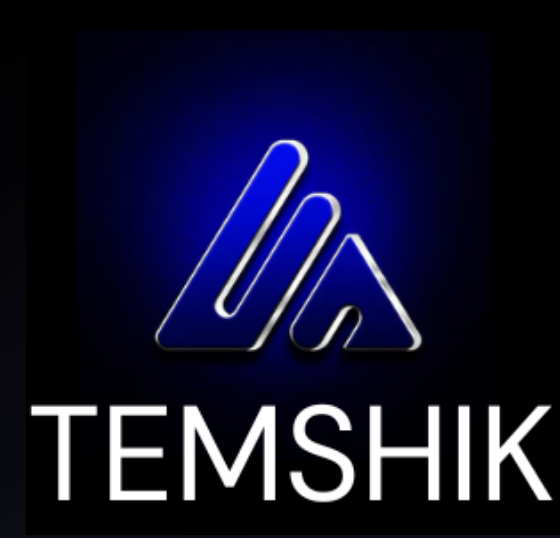

app/src
CLI-команды, запуск сервера, daemon RPC, API для backtest, trade, logs, status, up/down и системных действий.

Исследовательский проект с потенциалом внедрения
TEMSHIK автоматизирует цикл торговой работы: получает рыночные данные, очищает поток, запускает AI и торговую логику, проверяет риск, исполняет ордера и логирует весь процесс на каждом слое. Отдельный контур обучения модели построен на рыночных данных Bitcoin и методике Smart Money.
Карта работы системы
Схема ниже собрана по реальным слоям проекта: streams, state, strategy processing, trade execution, risk control и AI-контур.
OKX, Bybit, Bitget, Binance, Kraken, Coinbase, Gate.io
котировки · история · баланс · ордераЕдиный слой доступа к данным и торговым операциям через API.
packages/exchangesCandlesStream, TradesStream, OrderbookStream, TickerStream.
события рынка в реальном времениПоток данных очищается, приводится к общему формату, распределяется по marketId и сохраняется как актуальный снимок состояния. Этот слой подготавливает данные для логики и AI.
MarketsStream → BotMarketStore → StrategyEventПолучает нормализованные рыночные данные, обрабатывает их в гибридной модели и формирует действие buy / sell / hold на основе вероятности сценария.
Keras / TensorFlow · hybrid model · probability-based outputStrategyRunner, BotProcessing и шаблоны стратегий рассчитывают сигналы, условия входа, выхода и сопровождения сделки на основе обычных торговых схем.
StrategyRunner · bot-templates · event-driven logicРезультаты AI и классического контура сходятся в одном месте. Здесь собирается итоговое решение, создаются SmartTrade-сущности и передаются дальше по execution-цепочке.
BotProcessing · BotControl · createSmartTrade / updateSmartTradeПроверка лимитов позиции, просадки, stop-loss, take-profit и условий допуска к исполнению.
Ведёт pending trades, ордерные события и жизненный цикл SmartTrade через Trade / SmartTradeExecutor.
TradeManager / Trade / SmartTradeExecutorПостановка, обновление, отмена и повторная обработка ордеров через биржевой API.
OrdersStream · TickerChannel · exchangeProviderРынок, сигналы, очередь стратегии, исполнение ордеров, ошибки и завершение сделок — всё проходит через логирование.
Исторические данные подаются в отдельный контур симуляции для проверки стратегии и AI до реального запуска.
Управление системой идёт через frontend, CLI, daemon RPC и API-слой.
Архитектура проекта
CLI-команды, запуск сервера, daemon RPC, API для backtest, trade, logs, status, up/down и системных действий.
Market streams, order streams, BotManager, BotMarketStore, TradeManager, Platform bootstrap и orchestration.
StrategyRunner, BotControl, effect runners и механизм исполнения торговых шаблонов.
Market simulator, backtesting engine и отчёты по качеству стратегии на исторических данных.
Провайдеры бирж, унификация API и рабочий слой exchange accounts.
Хранение exchange accounts, bots, smart trades, orders и состояния системы.
Практический тест
Тест рассматривался не как абстрактная метрика модели, а как практическая проверка того, что весь контур от данных до решения реально работает.
Работоспособность всей системы: обработка котировок, прохождение данных через AI-контур, генерация действия buy / sell / hold, передача решения в торговую логику и совместимость с risk-management.
Bitcoin, исторические котировки, 15-минутный таймфрейм.
Направление цены, корректность выходного сигнала и применимость решения в реальной системе исполнения.
Связка AI, торговой логики и риск-менеджмента работает как единый практический контур, а не как изолированная модель.
Обучение AI
Модель обучалась не на абстрактных примерах, а на реальных рыночных данных Bitcoin с поэтапным объяснением паттернов и подтверждением правильных сигналов.
На первой части обучения модели на конкретных примерах показывались элементы Smart Money: зоны ликвидности, imbalance, FVG, order blocks, BOS / CHoCH, Fibonacci и другие рыночные структуры. Целью было объяснить, как выглядит нужный рыночный контекст.
На второй части обучения модели указывалось, где паттерн действительно есть, а где его нет. Так формировалось понимание, какие сигналы являются валидными.
Основной датасет: BTC/USDT, период 2014–2023, таймфрейм 15 минут, источник — Binance Data Vision.
Сначала модели объясняли ожидаемый результат, затем дообучали на датасете, после чего подкрепляли правильные ответы и проверяли на собственных и готовых торговых сценариях.
Модель анализирует движение на нескольких горизонтах: базовое движение за месяц, затем за неделю, затем внутри дневной сессии и уже после этого переходит к скальперским входам на основе Smart Money. Это позволяет не принимать решение только по локальному шуму, а учитывать общий рыночный контекст.
AI-модель
Котировки и исторические данные после очистки и нормализации. Модель работает с подготовленным рыночным потоком и производными признаками.
buy / sell / hold с вероятностной оценкой сценария.
Итоговое решение выбирается по вероятности, но допускается к исполнению только через risk-management.
Собственные торги + готовые торги. Основной крупный датасет: BTC/USDT, 2014–2023, 15m, плюс отдельное обучение на паттернах Smart Money.
Binance Data Vision, Keras / TensorFlow, а также API-документация Binance / OKX / Bybit / Kraken для интеграционного слоя.
Сравнение с аналогами
Блок собран по сравнению из конкурсных материалов: коммерческие боты, open-source платформы и сам TEMSHIK по ключевым практическим критериям.
TEMSHIK занимает промежуточную, но сильную позицию: он сочетает удобство готового интерфейса и стратегий с прозрачной открытой архитектурой, логированием и возможностью подключать более сложный AI-контур по мере роста проекта.
Ограничения и развитие
Здесь проект описан без маркетингового перегиба: что уже работает, где есть реальные ограничения и куда логично развивать систему дальше.
Проект создаётся не внутри биржевого фонда, поэтому по объёму ресурсов, инфраструктуре и масштабу исследований он физически не может повторять продукты топового институционального уровня.
Наиболее очевидные направления усиления — глубокое дообучение AI, добавление более незаметных маркеров рыночного контекста и подключение анализатора новостей как ещё одного входного слоя.
Следующий технический шаг — не только усиливать криптовалютный контур, но и готовить архитектуру к адаптации под Forex и опционы на нефть.
Roadmap проекта строится как последовательное наращивание точности и применимости: сначала усиление AI-модуля и расширение аналитических признаков, затем интеграция новостного анализа, после этого — перенос на новые классы инструментов и проверка системы в более широком рыночном контуре.
Демонстрация
Ниже — реальная запись интерфейса и работы проекта, встроенная прямо в сайт.
Исходный код
GitHub: github.com/ClonSlon/Temshik